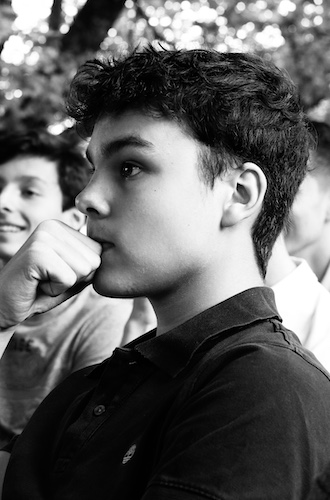

Bonjour à tous, je m’appelle Kyrian Marchand j’ai 18 ans (27/10/02) et je suis en première année d’un DUT informatique à l’IUT d’Aix-Marseille. Pour parler rapidement de moi, je suis née à Fréjus dans le Var. J’ai obtenu mon bac scientifique l’année dernière et j’ai l’intention d’obtenir mon DUT l’année prochaine.
Tout d’abord, je tiens à dire que je n’ai jamais su, et je ne sais toujours pas ce que je ferai plus tard. Au cours de mes dernières années e lycée, j’ai dû choisir une façon dont j’aimerais étudier. J’ai toujours voulu faire une école d’ingénieur, mais je pense que l’école préparatoire aurait été possible mais avec beaucoup de sacrifices et c’est pourquoi j’ai préféré faire un DUT. D’ailleurs, j’ai choisi le département informatique parce que j’ai toujours eu un pied dans cet environnement depuis que je suis jeune, avec un ordinateur dans les mains et entouré de nouvelles technologies.